Open Source GIS
Myth-busting and Careers Advice
The Questions
- What is open source, and what is it not?
- What are the key gis technologies to focus on?
- What careers are available?
The Myths
It's not like this
Or this
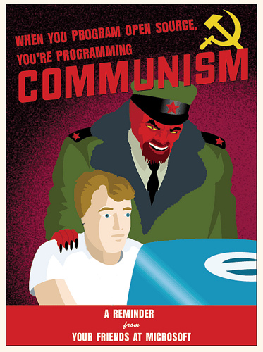Or even this
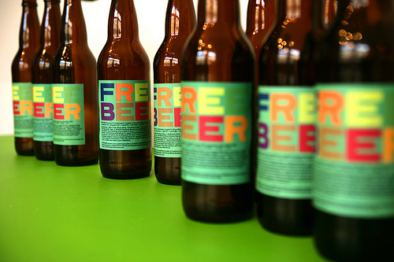And you won't be left on your own with no support

So what is it about?
A different kind of license that protects the author of the code, but disallows discrimination and restriction
There's no getting around the fact that cost is important
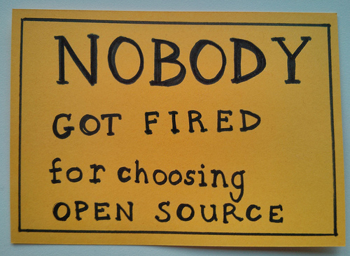But there's no vendor lock-in

It's about interoperability
It gives you control over your work
It gives you choice over the tools you use
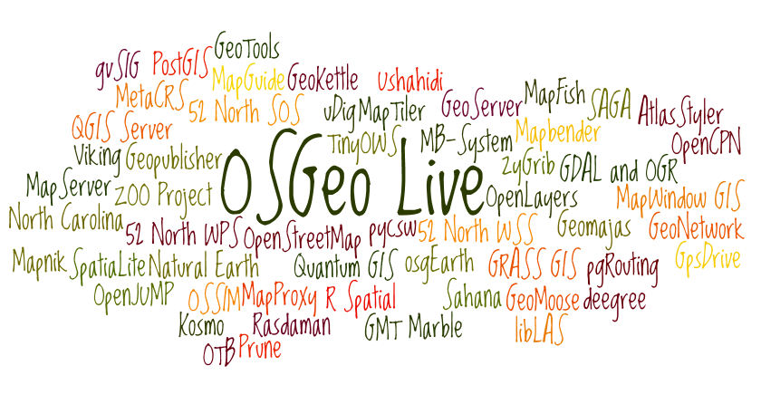OSGeo Live Wordcloud
Key Technologies
Having established there's a lot of choice of open source GIS tools, there are some key technologies to focus on
Databases: PostgreSQL
- PostgreSQL is increasingly used as a cost-effective replacement for proprietary databases
- The basics of server-based, spatially enabled databases are roughly applicable to PostgreSQL, SQL Server and Oracle
- So installing PostgreSQL/PostGIS and learning some SQL is a really good thing to do
This needn't be difficult or time-consuming...
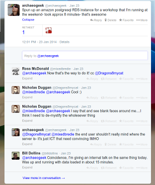Desktop GIS: QGIS
- These days, QGIS is a perfectly acceptable replacement for proprietary desktop GIS
- It's also fully cross-platform, with loads of support
- Learning how to translate skills learned in other packages is important
It's increasingly being installed in "traditional GIS" environments
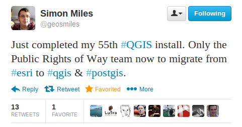Scripting: Python
- Both open source and proprietary GIS use python
- It has modules for working with rasters, vectors, databases and many more
- You WILL be able to write working code within minutes of starting to use it!
Use it to automate or chain together tasks that would otherwise eat up your time
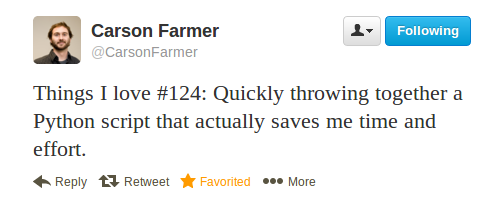Sharing: GitHub
- The easiest way to learn about repositories and version control
- It's not just for code- share documentation/presentations/data/your CV
- Both proprietary and open source companies have an increasing presence
Honourable Mentions
- Mapserver- for making your data work on the web
- Javascript- the language of choice for web-based mapping and data visualisation
- CSS- for making maps look pretty
- Open Data- for having something to actually work with
So, can you make a living doing all of this?
Yes! That's what we do at Astun
We have a software suite
...but behind the scenes it's built on open source
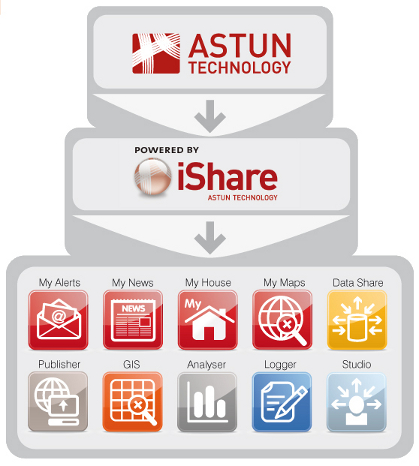We take (often messy, sometimes broken) data
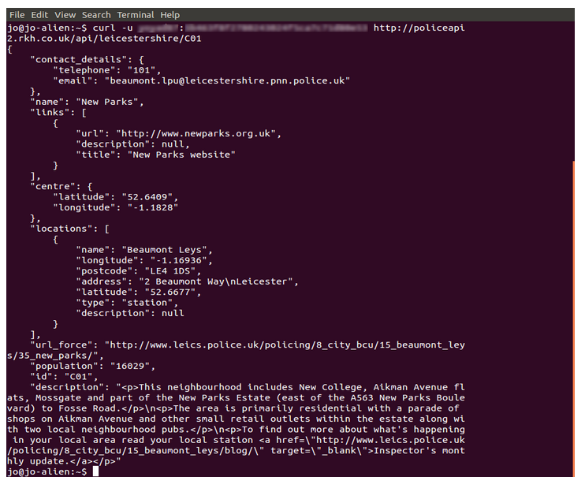Run it through postgresql, python and a few other tools
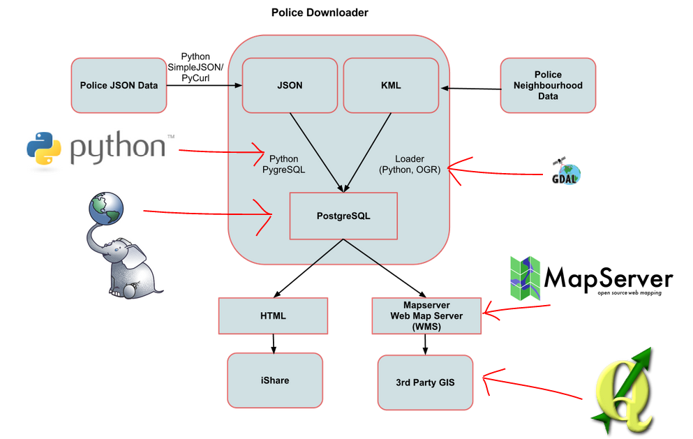So we can display it in any way we like
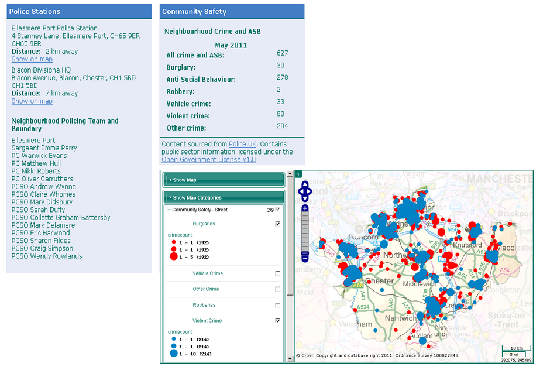We do this with many types of data
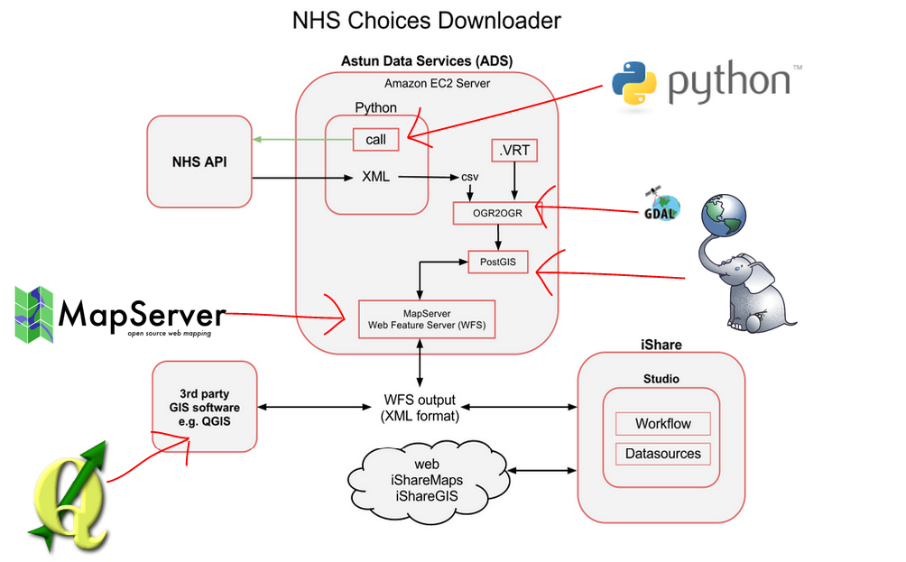To make front ends that often don't even look like maps!
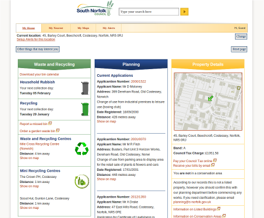But are we typical?
Yes...
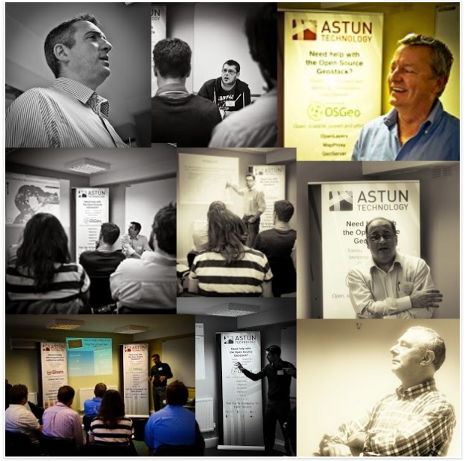...and No
Working for a company like Astun requires more than just knowing which buttons to press
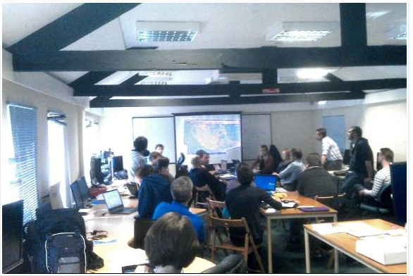Typical Interview Questions:
- What's your favourite text editor?
- What's your Twitter/GitHub handle?
- Which do you prefer, Mapserver or Geoserver?
- (We do ask serious questions too)
Things to take away
- Learning SQL and scripting will get you a step up, whatever area you go into
- Learn how to do things in multiple packages/ways, rather than learning a sequence of button presses
- Keep exploring and sharing- you never know what opportunities will show up
- Keep an open source mindset!
Thanks!
Questions?
Find me at about.com/jocook
Find this talk at github.com/archaeogeek/UCL2014_talk